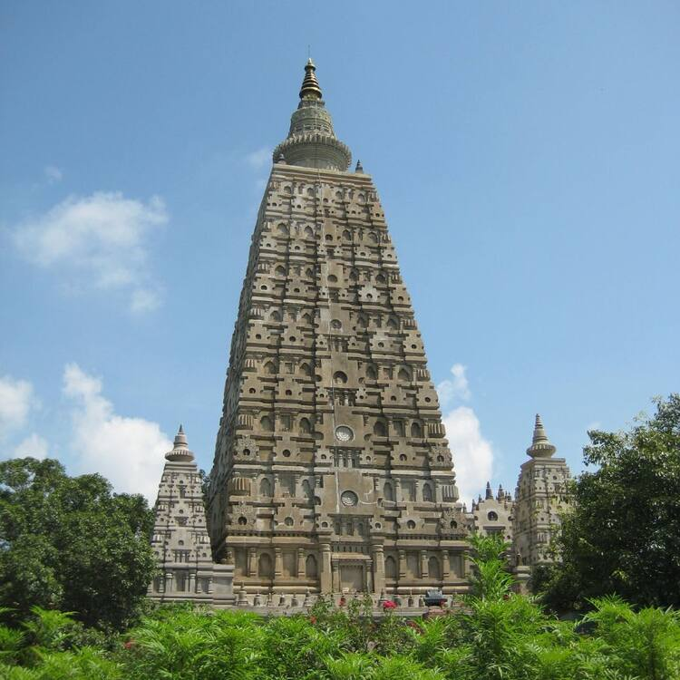

Mahabodhi Temple
The Mahabodhi Temple (literally: "Great Awakening Temple") or the Mahābodhi Mahāvihāra, a UNESCO World Heritage Site,
is an ancient, but rebuilt and restored Buddhist temple in Bodh Gaya, Bihar, India, marking the location where the Buddha
is said to have attained enlightenment.[1] Bodh Gaya is 15 km from Gaya and is about 96 km (60 mi) from Patna.
For more information "Click Here"

Sabhayata Dwar
The Sabhyata Dwar or Civilization Gate is a sandstone arch monument located on the banks on River Ganga in the city of Patna
in the Indian state of Bihar. The Sabhyata Dwar is built with a Mauryan-style architecture with a purpose to show
the ancient glory of Pataliputra and traditions and culture of the state of Bihar.
For more information "Click Here"
Golghar
The Golghar or Gol Ghar (गोलघर), ("Round House") is a large granary located to the west of
the Gandhi Maidan in Patna, capital of Bihar state, India.
For more information "Click Here"
Zoo Patna
Sanjay Gandhi Jaivik Udyan (also known as Sanjay Gandhi Biological Park) or Patna Zoo is located off Bailey Road in Patna,
Bihar, India.[5][6][7] The park was opened to the public as a zoo in 1973.
The park is Patna's most frequented picnic spot, with more than 36,000 visitors on New Year's Day alone in 2022.[8]
For more information "Click Here"
Mahavir Mandir
Mahavir Mandir, Patna one of the holiest Hindu temples dedicated to Lord Hanuman, located in Patna, Bihar, India. Millions
of pilgrims visit the temple every year.[1][2] Acharya Kishore Kunal is the secretary
of the Mahavir Mandir Temple Trust, Patna.[3]
For more information "Click Here"
Eco Park
Rajdhani Vatika, better known as Ecological Park or Eco Park, is a park located at Strand Road in Patna, Bihar.
This park was inaugurated in October 2011 by Nitish Kumar, the Chief Minister of Bihar, following an initiative of the Department
of Environment and Forest, Bihar. The area has 1,445 metres of pathway, a children's corner and 1,191 metre jogging track.
It has been developed to ease the load of Patna Zoo.[1][2] The park is spread over 9.18 hectares of land, including two lakes.
For more information "Click Here"
Kumharar Park
Kumhrar or Kumrahar is the area of Patna where remains of the ancient city of Pataliputra were excavated by the Archaeological
Survey of India starting from 1913. It is located 5 km east of Patna Railway Station.[1]
For more information "Click Here"

Mahatma Gandhi Setu
Mahatma Gandhi Setu (also called Gandhi Setu or Ganga Setu) is a bridge over the river Ganges in Bihar, India, connecting Patna
in the south to Hajipur in the north.[3] Its length is 5,750 metres (18,860 ft)[4] and it is the third-longest river bridge
in India.[5][6] It was inaugurated in May 1982 in a ceremony in Hajipur by the then prime minister, Indira Gandhi. From 1982 to 2017,
Mahatma Gandhi Setu remained as the longest bridge in India. Later, Gandhi Setu rehabilitation project was undertaken to install
triangular steel trusses on Mahatma Gandhi Setu.[7]
For more information "Click Here"